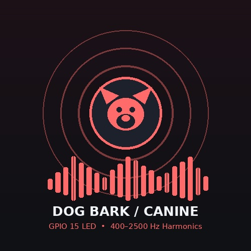
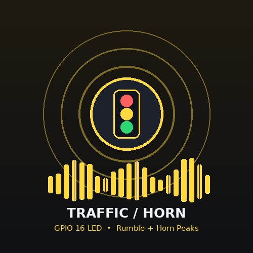
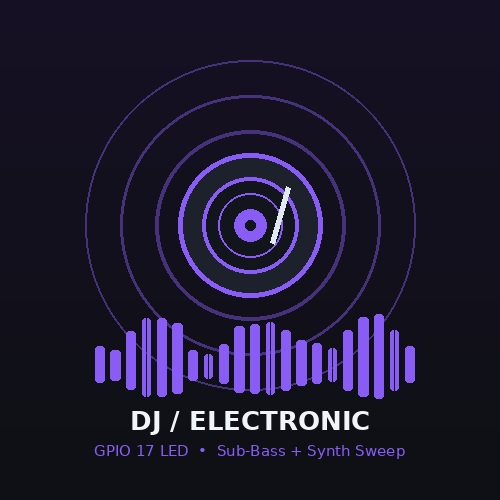

ESP32-S3 + 8 MB Memory
Ready (Select Input Mode)
Audio Context AI
ESP32-S3 real-time edge telemetry and acoustic evaluation dashboard
GPIO 15 LED: DOG
GPIO 16 LED: TRAFFIC
GPIO 17 LED: DJ
Latency: -- ms | RMS: --

🐕 Dog
🚦 Traffic
🎧 DJManual Telemetry Simulation: Select any card to evaluate interface rendering and virtual GPIO state assertions.